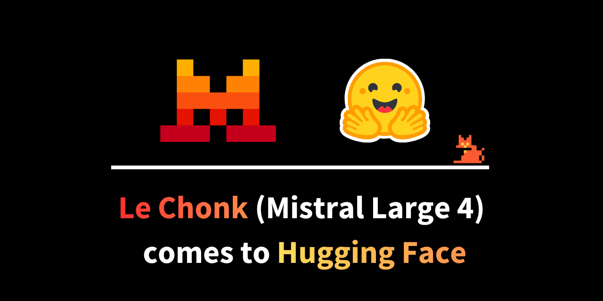

Компания Mistral AI (Франция) выложила веса своей флагманской модели Mistral Large 4 — unofficially ML4, very officially *le Chonk* — на Hugging Face в вариантах FP8 и NVFP4, плюс GGUF-кванты от Unsloth и команды llama.cpp. Модель принята в трансформеры, vLLM и llama.cpp «с первого дня». Формально анонс публичного превью вышел ещё 6 октября, но именно 29 октября модель стала полноценно открытой: веса, лицензия и документация доступны всем.
Le Chonk — мультимодальная модель «текст+картинки на входе, текст на выходе», построенная на смеси экспертов (MoE): из 128 экспертов на каждый токен активируются четыре плюс один постоянный, а разреженное внимание дополнительно выбирает, к каким позициям контекста обращаться. Контекстное окно — 1 млн токенов, зрение — через кодировщик Pixtral. В смешанном индексе кодинг-агентов (Coding Agent Index) модель набрала 49,8% — по данным Mistral, это выше DeepSeek V4 Pro 0813 и Qwen3.8 Max, а в общем рейтинге открытых моделей Artificial Analysis Intelligence Index она занимает пятое место.
Mistral позиционирует модель прежде всего для защитников, и цифры подкрепляют: 82% на Artificial Analysis Cyber Index — тесте, где нужно воспроизвести настоящую уязвимость в open-source-программе, а затем залатать её. Это лучший зафиксированный результат теста; при этом несколько закрытых флагманов дают около нуля, потому что отказываются даже браться за работу. Плюс 93% решения задач из 40 конкурсов по кибербезопасности (Cybench) и 93,3% устойчивости к инъекциям промптов на бенчмарке Lakera B3. При этом модель не превратилась в универсального злоумышленника: средний процент отказа на вредных запросах (JailbreakBench, StrongREJECT, AgentHarm) у неё выше, чем у любой другой открытой модели.
Лицензия — Mistral Ecosystem Open-Weight License (производная от MIT с ограничением на продажу «модели как сервиса»). Логика компании: исследование уязвимостей и реакция на инциденты со стороны похожи на атаку, поэтому фильтры закрытых API блокируют защиту посреди работы, а команда, зависящая от чужого API, рискует потерять доступ в разгар инцидента. С открытыми весами и политика использования, и развёртывание остаются у самой команды — на базе модели можно строить собственный контур вокруг своей кодовой базы, крэш-логов и образцов вредоносов, а поведение отказов исследователи могут измерять сами, а не читать про него в пресс-релизе.
Показательно, что полезность в анализе вредоносного кода, приоритизации уязвимостей и написании правил детектирования Mistral получила «в нагрузку» — модель этому явно не обучали. Для открытого сегмента это первый триллионный игрок, который системно целился в нишу агентной киберзащиты.